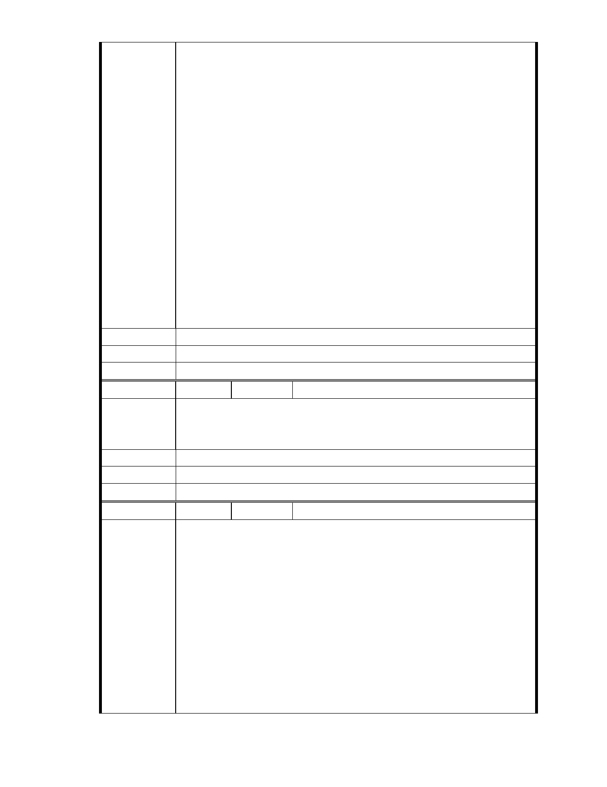

很好的水土保持工法，相信大家都知道的。
慈濟用心用愛在關懷社會，已是受到舉世公認的慈善團體，相信以愛為
出發點是受到肯定的，各位長官，希望您也能以愛民為出發點，共同來
成就這份好因緣、造福鄉里、回饋社會，讓愛的光輝在這塊土地上發光
發亮！這是無量無量的功德，比山高，比海深啊！
內湖居民期待慈濟，能做到溫暖人心的工作，讓這片土地充滿愛與關懷，
發揮救人、愛人的使命。英明的郝市長，請您聽聽我們居民迫切需要慈
濟的心聲，如果能成就慈濟的改善規劃案，您將會是功德無量！庇蔭下
一代子孫，這將是無量無量的功德啊！請郝市長仔細思量，我們內湖居
民的盼望！
華 敬上
內湖居民 蔡其
建議辦法
市 府 說 明 相關陳情意見將納入本案審查人民意見，依法定程序辦理。
委 員 會 決 議 同編號 1.。
編
號 205
陳情人 MA201301080115
內湖園區雖然是保護區但也要適度開放，已平衡內湖的發展，相信慈濟
陳 情 理 由 一定會建設一個美好的園區。
建議辦法
市 府 說 明 相關陳情意見將納入本案審查人民意見，依法定程序辦理。
委 員 會 決 議 同編號 1.。
編
號 206
陳情人 MA201301090208
慈濟內湖園區讓某些人士炒作'喧染得甚囂塵上,最近在大馬路上可以看
到由「內湖保護區守護聯盟」買的車廂廣告,曲解事實已陷入非達抗爭目
的決不終止,已無大是大非可言,以一位長期投入慈濟環保工作的志工心
情煞是難過,證嚴上人長期關注環保,帶領全球慈濟人力行愛護地球的心,
我們有目共睹從不懷疑,喧染'力行環保...等,這一切郝市長您知道嗎?您看
陳 情 理 由 到嗎?
慈濟志工秉持上人身教內修"誠正信實",一顆無所求付出的心,
為大地環保'人類心靈環保付出,心淨則外淨,本不用對塵囂稍加在意的,然
對許多不知詳情的社會人士將對台灣之寶"慈濟"產生誤解,對
郝市長主持的市府威信也會"無感",敬愛的郝市長,您是本事件
發生區域的大家長,基於"做對的事",基於護持台灣之寶,請您要
- 269 -